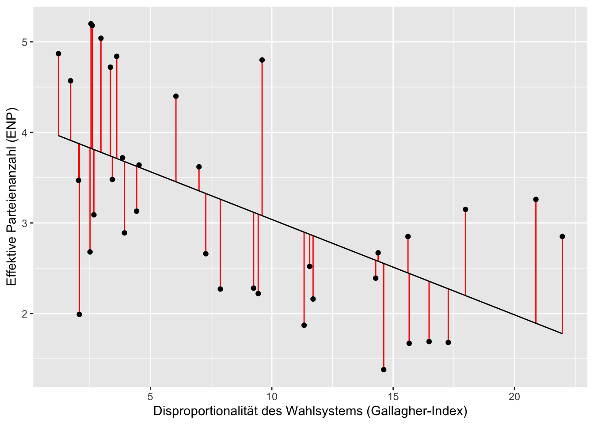

In diesem Tutorial werden wir uns mit einer bivariaten OLS (ordinary least squares - Regression der kleinsten Quadrate) Regression beschäftigen. Regressionen dienen dazu, den Zusammenhang zwischen Variablen rechnerisch zu testen. Die OLS Regression ist eine sogenannte lineare Regression, welche für stetige Variablen verwendet wird. Lineare Regressionen sind vor allem bei Querschnittsdaten, die zu einem einzigen Zeitpunkt erhoben wurden, gut geeignet.
Die OLS nimmt an, dass sich die abhängige Variable als lineare Funktion einer unabhängigen Variable beschreiben lässt. Eine Veränderung um eine Einheit bei der unabhängigen Variable führt zu einer entsprechenden Veränderung bei der abhängigen Variable.
Im folgenden werden wir eine lineare bivariate Regression durchführen. Beispielhaft werden wir den Zusammenhang zwischen der effektiven Parteienanzahl (ENP) - enpp4510 - und dem Gallagher-Index - disprop4510 - berechnen.
Wie immer laden wir in einem ersten Schritt die zusätzlichen Pakete, die wir für dieses Tutorial brauchen. Anschließend laden wir den Datensatz (in diesem Fall den Lijphart-Datensatz) und transformieren einige Variablen, damit diese der von uns gewünschten Klasse (numerische Variablen) angehören.
# Pakete laden
library(broom) # Das Paket wird in Punkt 4 dieses Tutorials verwendet
library(ggplot2) # Das Paket wird in Punkt 4 dieses Tutorials verwendet
library(psych) # Das Paket benötigen wir um schöne Korrelationstabellen zu erstellen
library(data.table) # Das Paket benötigen wir um schöne Korrelationstabellen zu erstellen# Datensatz laden
getwd()
setwd("eigener Pfad")
lijphart <- read.csv2("Lijphart_Data_recode.csv")# Variablenklassen umwandeln
# ENPP
lijphart$enpp4510 <- as.numeric(lijphart$enpp4510)
# Gallagher
lijphart$disprop4510 <- as.numeric(lijphart$disprop4510)
# Bikameralismus
lijphart$bicam4510 <- as.numeric(lijphart$bicam4510)
# Cabinet Type
lijphart$minwin_one_part4510 <- as.numeric(lijphart$minwin_one_part4510)
# Cabinet Duration
lijphart$exe_dom4510 <- as.numeric(lijphart$exe_dom4510)
# Pluralism
lijphart$inter_gr_plural4510 <- as.numeric(lijphart$inter_gr_plural4510)
# Federalism
lijphart$federal4510 <- as.numeric(lijphart$federal4510)
# Bikameralism
lijphart$bicam4510 <- as.numeric(lijphart$bicam4510)
# Constitutional Rigidity
lijphart$const_rigid4510 <- as.numeric(lijphart$const_rigid4510)
# Judicial review
lijphart$judic_rev4510 <- as.numeric(lijphart$judic_rev4510)
# Central bank independence
lijphart$cen_bank_indep4594 <- as.numeric(lijphart$cen_bank_indep4594)
# Datensatz: Lijphart 1945-2010. Dieser Datensatz wird unsere spätere Analyse erleichtern
lijphart4510 <- data.frame(lijphart$Country, lijphart$enpp4510
, lijphart$minwin_one_part4510, lijphart$exe_dom4510
, lijphart$disprop4510, lijphart$inter_gr_plural4510
, lijphart$federal4510, lijphart$bicam4510
, lijphart$const_rigid4510
, lijphart$judic_rev4510, lijphart$cen_bank_indep4594)In Sitzung 5 haben wir uns mit den Ähnlichkeitsmaßen und mit der Streuung einiger Variablen des Lijphart-Datensatzes auseinandergesetzt. Für dieses Beispiel berechnen wir den Zusammenhang zwischen der effektiven Parteienanzahl (enpp4510) - unserer abhängigen Variable - und dem Gallagher-Index (disprop4510) - unserer unabhängigen Variable.
Der erste Schritt einer Regressionsanalyse ist die Betrachtung der Korrealtionsmatrix. Diese hilft uns dabei, einen ersten Eindruck über die Zusammenhänge der uns interessierenden Variablen zu bekommen. Typische Korrelationsmetriken sind die Pearson und die Spearman’s-R Korrelation. Um die Korrelationskoeffizienten zu errechnen gibt es viele unterschiedliche Herangehensweisen. In dem folgenden Beispiel werden wir die Korrelation mit der cor-Funktion errechnen und in dem neuen Objekt lijphart_cor speichern.
Obwohl wir uns in den nachfolgenden Schritten auf den Zusammenhang zwischen ENPP und Gallagher-Index fokussieren, werden wir hier eine Korrelation zwischen den zwei uns interessierenden Variablen darstellen.
Wie in Sitzung 7 prüfen wir den Zusammenhang zwischen der ENPP und dem Gallagher-Index zunächst mit den Korrelationsmaßen:
lijphart_cor_pear <- cor(lijphart$enpp4510, lijphart$disprop4510, method = "pearson") # Pearson Korrelation
lijphart_cor_pear## [1] -0.5679062lijphart_cor_spear <- cor(lijphart$enpp4510, lijphart$disprop4510, method = "spearman") # Spearman's-R Korrelation zum Vergleich
lijphart_cor_spear## [1] -0.5771285Anscheinend haben die beiden Variablen einen negativen Zusammenhang. Lässt sich das auch in der linearen Regression bestätigen?
Um eine bivariate lineare Regression durchzuführen, verwenden wir die Funktion lm() (kurz für lineare Modelle). Wir müssen die abhängige Variable, die unabhängige Variable und den Datensatz angeben. In unserem Beispiel geben wir enpp4510 als abhängige Variable und disprop4510 als unabhängige Variable an und beziehen diese Variablen aus dem Datensatz lijphart. In einer OLS wird die abhängige Variable als lineare Funktion der unabhängigen Variable angenommen. Zur Berechnung einer solchen Funktion nutzen wir das tilde-Symbol ~ (Alt+N oder Option+N). Die Regressionseregbnisse speichern wir in dem Objekt lm_lijphart.
lm_lijphart <- lm(enpp4510 ~ disprop4510, data = lijphart)Wenn wir lm_lijphart eingeben, werden uns der Intercept (der Schnittpunkt der Regressionsgeraden mit der Y-Achse) und die Koeffizienten des Modells ausgegeben.
lm_lijphart##
## Call:
## lm(formula = enpp4510 ~ disprop4510, data = lijphart)
##
## Coefficients:
## (Intercept) disprop4510
## 4.0921 -0.1054Wir sehen hier, dass der Intercept 4,09 beträgt und der Koeffizient mit -0.10 angegeben wird. Steigt der Wert des Gallagher-Index (wird also das Wahlsystem eher disproportional) um eine Einheit, dann verändert sich der ENP-Wert um -0,10. Wir sehen hier also einem negativen Zusammenhang zwischen Parteienanzahl und Wahlsystemdisproportionalität, der sich mit den Ergebnissen von Lijphart deckt.
Intercept und Koeffizient alleine reichen aber nicht aus, um die Ergebnisse der linearen Regression vollständig zu beurteilen. Hierfür benötigen wir zusätzlich auch Informationen über den Standardfehler (SE), den p-Wert und weitere Modellstatistiken. Diese Informationen erhalten wir, wenn wir die summary() Funktion auf unser Objekt mit der linearen Regression (lm_lijphart) anwenden.
summary(lm_lijphart)##
## Call:
## lm(formula = enpp4510 ~ disprop4510, data = lijphart)
##
## Residuals:
## Min 1Q Median 3Q Max
## -1.8840 -0.7336 -0.2241 0.9471 1.7194
##
## Coefficients:
## Estimate Std. Error t value Pr(>|t|)
## (Intercept) 4.09206 0.27417 14.925 < 2e-16 ***
## disprop4510 -0.10536 0.02619 -4.023 0.000303 ***
## ---
## Signif. codes: 0 '***' 0.001 '**' 0.01 '*' 0.05 '.' 0.1 ' ' 1
##
## Residual standard error: 0.9503 on 34 degrees of freedom
## Multiple R-squared: 0.3225, Adjusted R-squared: 0.3026
## F-statistic: 16.19 on 1 and 34 DF, p-value: 0.000303Wir sehen hier, dass die Schätzung für disprop4510 negativ und statistisch signifikant ist. Je dispropotionaler ein Wahlsystem ist, desto niedriger die effektive Anzahl der Parteien. Weiterhin sehen wir, dass das R-Quadrat 0,30 beträgt. Das bedeutet, dass 30% der Varianz der Parteienanzahl durch unsere unabhängige Variable erklärt wird.
Mit diesen wenigen Code-Zeilen haben wir jetzt eine bivariate lineare Regression gerechnet und uns die Ergebnisse anzeigen lassen.
Im Grunde können Sie mit dem oben gezeigten Code alle notwendigen Informationen für eure Analyse generieren. Mittels ein paar zusätzlicher Operationen lassen sich die Modellkomponenten einzeln speichern und für weitere Analyseschritte wie z.B. eine Visualisierung nutzen.
Zuerst nutzen wir das broom Paket und die tidy-Funktion und konvertieren das Modell in einen Datensatz, in dem wir unsere Modellschätzungen und Teststatistiken speichern. Die tidy-Funktion fasst Informationen über Regressionsmodell-Komponenten zusammen. Wir speichern den neuen Datensatz in dem Objekt lm_fit_lijphart:
lm_fit_lijphart <- tidy(lm_lijphart)
lm_fit_lijphart## # A tibble: 2 x 5
## term estimate std.error statistic p.value
## <chr> <dbl> <dbl> <dbl> <dbl>
## 1 (Intercept) 4.09 0.274 14.9 1.72e-16
## 2 disprop4510 -0.105 0.0262 -4.02 3.03e- 4Die Konfidenzintervalle extrahieren wir mit conf.int = TRUE. Konfidenzintervalle geben Auskunft über die Präzision unseres Modells.
lm_fit_lijphart <- tidy(lm_lijphart, conf.int = TRUE)
lm_fit_lijphart## # A tibble: 2 x 7
## term estimate std.error statistic p.value conf.low conf.high
## <chr> <dbl> <dbl> <dbl> <dbl> <dbl> <dbl>
## 1 (Intercept) 4.09 0.274 14.9 1.72e-16 3.53 4.65
## 2 disprop4510 -0.105 0.0262 -4.02 3.03e- 4 -0.159 -0.0521Die Maße zur Interpretation der Modellgüte, wie z.B. das R-Quadrat, können wir uns mittels der glance-Funktion in ein zusätzliches Objekt speichern.
lm_glance_lijphart <- glance(lm_lijphart)
lm_glance_lijphart## # A tibble: 1 x 12
## r.squared adj.r.squared sigma statistic p.value df logLik AIC BIC
## <dbl> <dbl> <dbl> <dbl> <dbl> <dbl> <dbl> <dbl> <dbl>
## 1 0.323 0.303 0.950 16.2 0.000303 1 -48.2 102. 107.
## # … with 3 more variables: deviance <dbl>, df.residual <int>, nobs <int>Zusätzlich können wir auch Modellvorhersagen und Residuen speichern. Diese Metriken helfen uns dabei die Modellgüte zu beurteilen. Sind z.B. die Residuen eines Regressionsmodells nicht normal verteilt (das können wir in einem ersten Schritt mit einem Histogramm graphisch abtesten), dann müssen wir davon ausgehen das unser Modell verzerrt ist. Wir speichern die Modellvorhersagen und Residuen mit der augment()-Funktion und speichern die Informationen in dem neuen Objekt lm_aug_lijphart.
lm_aug_lijphart <- augment(lm_lijphart)
lm_aug_lijphart## # A tibble: 36 x 8
## enpp4510 disprop4510 .fitted .resid .hat .sigma .cooksd .std.resid
## <dbl> <dbl> <dbl> <dbl> <dbl> <dbl> <dbl> <dbl>
## 1 3.15 18.0 2.20 0.952 0.0954 0.949 0.0585 1.05
## 2 2.22 9.44 3.10 -0.877 0.0284 0.952 0.0128 -0.937
## 3 2.68 2.51 3.83 -1.15 0.0554 0.942 0.0453 -1.24
## 4 1.69 16.5 2.36 -0.666 0.0756 0.957 0.0217 -0.729
## 5 1.68 17.3 2.27 -0.593 0.0856 0.958 0.0199 -0.652
## 6 4.72 3.35 3.74 0.981 0.0483 0.949 0.0284 1.06
## 7 1.38 14.6 2.55 -1.17 0.0557 0.941 0.0476 -1.27
## 8 2.52 11.6 2.87 -0.354 0.0347 0.962 0.00258 -0.379
## 9 2.67 14.4 2.58 0.0930 0.0536 0.964 0.000287 0.101
## 10 4.57 1.71 3.91 0.658 0.0633 0.957 0.0173 0.716
## # … with 26 more rowsDiesen neuen Datensatz können wir zur Visualisierung unserer linearen Regression und den Residuen (die wir mit rot hervorheben) nutzen. Die Visualisierung realisieren wir mit dem ggplot2-Paket, welches wir bereits aus der sechsten Sitzung kennen und das wir nochmals in der neunten Sitzung genauer besprechen werden.
ggplot(lm_aug_lijphart, aes(x = disprop4510, y = enpp4510)) +
geom_segment(aes(xend = disprop4510, y = enpp4510, yend = .fitted),
colour = "red") +
geom_point() +
geom_line(aes(x = disprop4510, y = .fitted)) +
xlab("Disproportionalität des Wahlsystems (Gallagher-Index)") + ylab("Effektive Parteienanzahl (ENP)")
Im kommenden Tutorial werden wir weitere Visualisierungen von bivariaten Zusammenhängen besprechen und noch etwas tiefer in die Funktionen von ggplot2 eintauchen.
Bivariate lineare Regressionen erklären den Zusammenhang zwischen einer abhängigen Variable und einem Prädiktor. Der Regressionskoeffizient gibt die Effektstärke als Veränderung in y an, wenn die unabhängige Variable um eine Einheit zunimmt. lm() berechnet ein lineares Modell, summary() erzeugt einen anschaulichen Output. Lineare Modelle sind geeignet, wenn der Zusammenhang linear ist, die Residuen normalverteilt sind, keine Varianzheterogenität der Residuen vorliegt, keine durch Messfehler erzeugten Ausreißer vorliegen und keine Multikollinearität zwischen den Prädiktoren besteht. Mit der augment()-Funktion können die Residuen gespeichert und mit ggplot() können Regressionsergebnisse sinnvoll geplottet werden.
Bearbeiten Sie bitte die folgenden Aufgaben bis zur kommenden Sitzung: